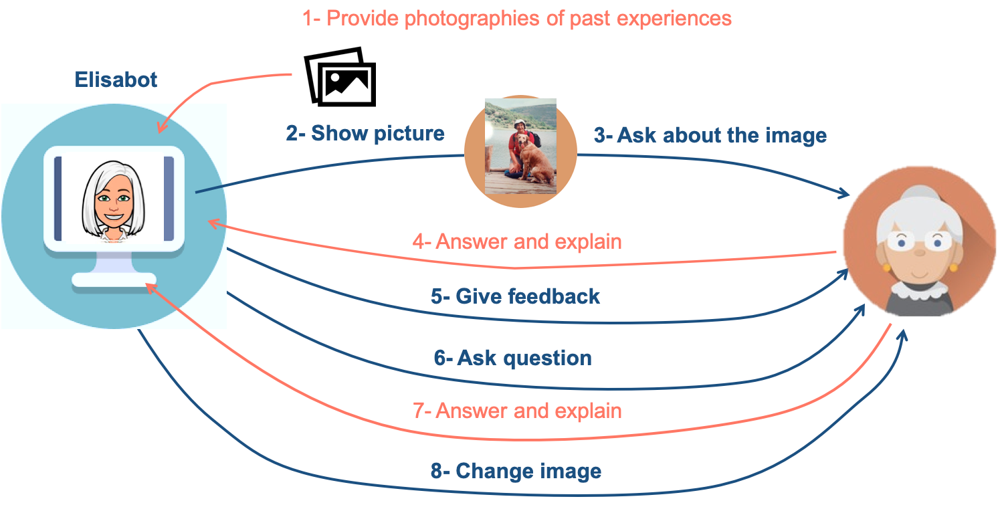

Elisabot is a conversational agent that simulates a reminiscence therapist by asking questions about the patient's experiences. Questions are generated from pictures provided by the patient, which contain significant moments or important people in user's life. The proposed methodology is specific for dementia therapy, compared to a general Image-based Question and Answering (Q&A) system, because the generated questions cannot be answered by only looking at the picture as common Q&A systems do, the user needs to know the place, the time, the people or animals appearing in the picture to be able to answer the questions. The activity pretends to be challenging for the patient, as the questions may require the user to exercise the memory, but amusing at the same time.
Before starting the conversation, the user must introduce photos containing significant moments for him/her. The system randomly chooses one of these pictures and analyses the content. Then, Elisabot shows the selected picture and starts the conversation by asking a question about the picture. The user should give an answer, even though he does not know it, and Elisabot makes a relevant comment on it. The cycle starts again by asking another relevant question about the image and the flow is repeated for 4 to 6 times until the picture is changed.
Elisabot is composed of two models: the model in charge of asking questions about the image which we will refer to it as Visual Question Generator (VQG), and the Chatbot model which tries to make the dialogue more engaging by giving feedback to the user's answers.
The algorithm behind VQG consists in an Encoder-Decoder architecture with attention. The model is trained to maximize the likelihood of producing a target sequence of words optimizing the cross-entropy loss. The Encoder takes as input one of the given photos from the user and learns its information using a Convolutional Neural Network (CNN). The CNN provides the image's learned features to the Decoder which generates the question word by word by using an attention mechanism with a Long Short-Term Memory (LSTM). Since there are already CNNs trained on large datasets with an outstanding performance, we integrate a ResNet-101 trained on ImageNet.
The core of our chatbot model is a sequence-to-sequence. The encoder iterates through the input sentence one word at each time step producing an output vector and a hidden state vector. The hidden state vector is passed to the next time step, while the output vector is stored. We use a bidirectional Gated Recurrent Unit (GRU), one GRU fed in sequential order and another one fed in reverse order. The outputs of both networks are summed at each time step, so we encode past and future context. By using an attention mechanism, the decoder uses the encoder’s context vectors, and internal hidden states to generate the next word in the sequence. It continues generating words until it outputs an token. We use an attention layer to multiply attention weights to encoder's outputs to focus on the relevant information when decoding the sequence. This approach have shown better performance on sequence-to-sequence models